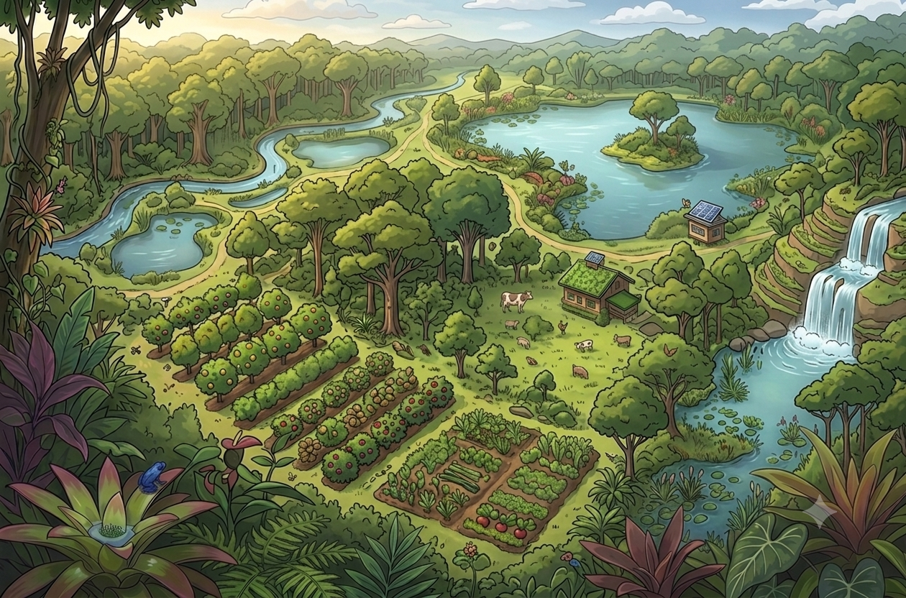
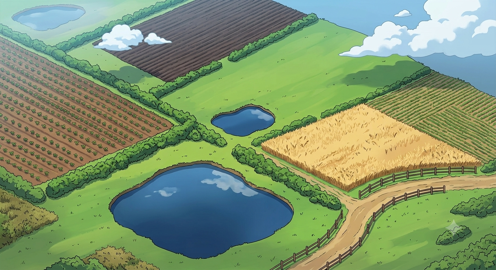
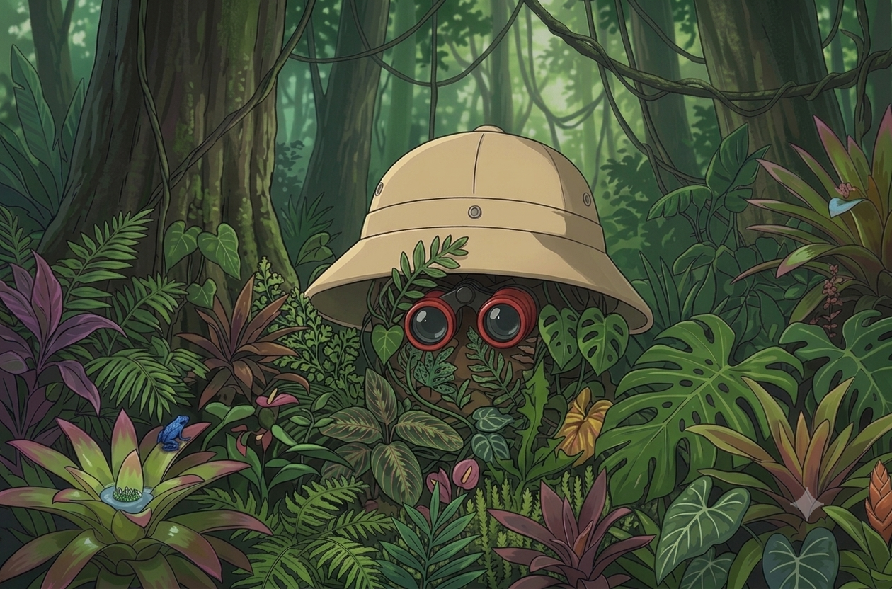

I’m Enrico Magazzino, a researcher working across ecology, remote sensing, geospatial analysis, and data science to understand how landscapes change and how environmental evidence can be turned into practical insight.

Monitoring agricultural systems through a combination of satellite and field-based observation.

Capturing high-resolution data for habitat structure, biodiversity, and land management.

Connecting geospatial analysis with biodiversity indicators across diverse landscapes.
I specialise in Earth observation-driven monitoring of regenerative agriculture — integrating Sentinel-1 SAR, Sentinel-2 multispectral data, and UAV-based LiDAR and photogrammetry within machine learning frameworks.
My research interests span precision agriculture, landscape biodiversity indicators, and the ecological dimensions of land-use change, grounded in a background in natural science, environmental biology, and grassland ecology.
I work across the full research pipeline: UAV field campaigns, satellite data processing, Python workflow development, scientific writing, and international conference dissemination.
Thesis: Earth Observation–Driven Monitoring of Regenerative Agriculture: Satellite–UAV Fusion for Practice Verification and Landscape Biodiversity Indicators.
Study of the formation of regular vegetation patterns in drylands.
Davin, A., von Hardenberg, J., Berghuis, P. M., Mayor, Á. G., Magazzino, E., Rietkerk, M., et al. (2026). Guerrilla clonal growth strategy leads to amorphous pattern formation in a drylands vegetation model. Ecological Modelling, 515, 111510. doi.org/10.1016/j.ecolmodel.2026.111510
Using Landsat LST Data to Predict Vineyard Productivity Anomalies: A Case Study in the Euganean Hills wine region, Italy. SIFET Conference, Brindisi (2025); forthcoming on the SIFET website and to be published soon in the SIFET annals.
Coauthor of an ISPRS annals paper accepted for oral presentation at the 2026 ISPRS Congress, Toronto, Canada. Oral presentation in ISPRS Toronto 2026 ISPRS Congress | CRSS-SCT | Metro Toronto Convention Centre.
Preliminary germination and post-germination studies of Natura 2000 Nardus grassland species for restoration in Trentino. View report
Opposing effects of rainfall and nutrient shifts on temperate grassland stability via asynchrony, resistance, and diversity.
Python (professional), R (professional), Google Earth Engine, MATLAB (basic), LaTeX.
QGIS, ArcGIS, GeoServer, MapStore, WebGIS, GPS/RTK/GCP workflows.
Sentinel-1 SAR and broader satellite analysis, Sentinel-2 multispectral and thermal workflows, UAV LiDAR, photogrammetry, and thermal sensing (Agisoft Metashape, DJI Terra).
Microsoft Office, Adobe Creative Suite, drone piloting licence (SAPR), scientific writing, conference presentations.
Organised and led multiple field campaigns for data collection, including ground-truth sampling, vegetation surveys, and instrument deployment. Experienced UAV operations for aerial photogrammetry and thermal imaging (flight planning, sensor calibration, and post-flight processing). Comfortable with hands-on logistics, safety procedures, and collaborative work with landowners and field teams.